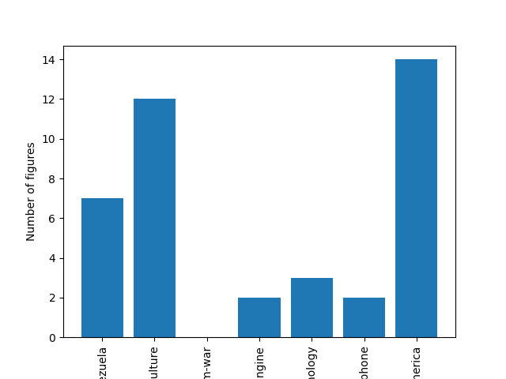

For file: 160541-Rivers-Venezuela
Keywords:
Contamination
surface water
estuarine zone
Venezuela Agua superficial
zona estuarina
Venezuela
Links found (0):
For file: 4836450-Agriculture
Keywords:
No Keywords found.
Vietnam War
Vietnam
the United States
factors
Links found (0):
For file: 1123626-Small-Engine
Keywords:
World Academy of Science, Engineering and Technology
Links found (0):
For file: 4571632-Nanotechnology
Keywords:
No Keywords found.
Links found (0):
For file: 6624395-Iphone
Keywords:
Apple, Steve Jobs and iPhone
Links found (9):
For file: 3958006-Prosperity-Spain-Latin-America
Keywords:
Development
Index
Prosperity
Latin America
Spain
Links found (0):
Number of Figures Histogram:
